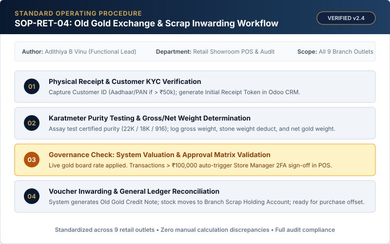
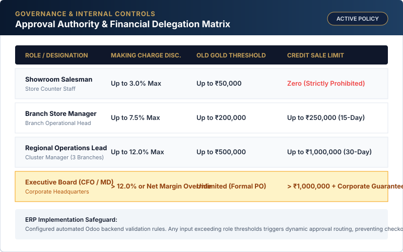
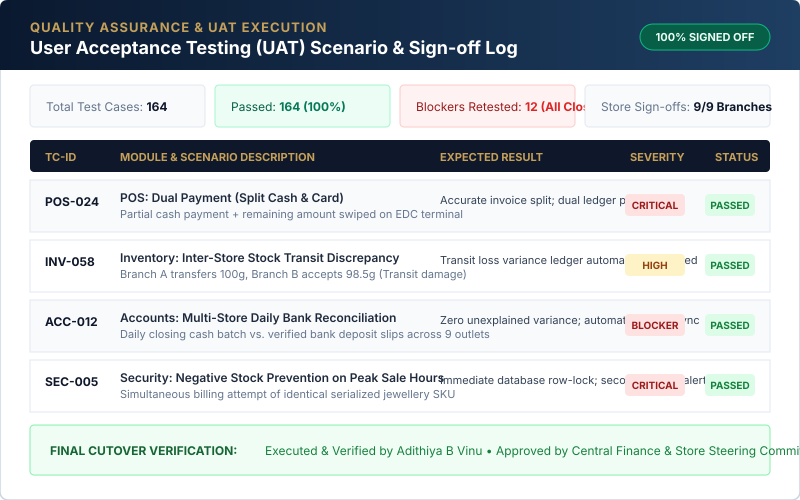

Multi-Module ERP Rollout: Jewellery Retail Group (9 Stores)
01. Context & Business Problem
A prominent 9-store retail jewellery chain was hindered by legacy, decentralized software that prevented real-time inventory visibility across branches. Daily gold-rate fluctuations, complex customer Old Gold exchange scrap calculations, high-value Job Work tracking, and branch-level cash/bank reconciliations were managed on error-prone spreadsheets, creating significant reconciliation delays and audit vulnerabilities.
02. My Functional Role
Served as the primary functional bridge between store branch managers, central accounts leadership, and the technical development team. Led requirement elicitation, authored the complete BRD/FRD repository, engineered standard operating procedures (SOPs), directed UAT test cycles, and traveled across 9 store branches to execute hands-on training for showroom salesmen and branch accountants.
Key Deliverables & Execution Work
Conducted process discovery workshops with showroom managers, head accountants, and merchandising teams. Documented 120+ pages of detailed functional specifications, mapping standard Odoo workflows to retail jewellery trade realities (purity tracking, stone weight deducts, making charges, hallmark tracking).
Built an exhaustive corporate SOP library containing 18 actionable operating manuals covering Purchase Inwarding, Sales POS operations, Old Gold trade-in verification, Job Work handovers, and Daily Bank Reconciliation. Established role-based authorization matrices preventing unauthorized store-floor discounts and managing scrap exchange limits.
Formulated and executed 160+ real-world business test cases across all 6 modules. Conducted simulated peak-hour billing stress tests, negative inventory tests, and multi-currency exchange scenarios, coordinating directly with developers to resolve all high-severity bugs prior to cutover.
Designed role-specific training modules in English and Malayalam/Tamil. Traveled to and trained over 70+ showroom sales representatives, cashiers, and branch accountants across all 9 locations, achieving 100% independent system operation upon branch cutover.
Deliverable Proof & Documentation Artifacts
Click tabs to inspect sample documentation, governance matrices, and test sheets authored for this rollout.


